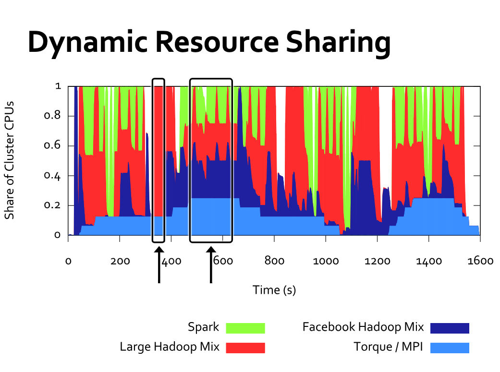

Link to paper: https://people.eecs.berkeley.edu/~alig/papers/mesos.pdf
Presentation: https://www.usenix.org/conference/nsdi11/mesos-platform-fine-grained-resource-sharing-data-center
Mesos is a cluster resource management software from UC Berkeley. Unlike many other frameworks already existed, Mesos is designed to support heterogeneous frameworks (Hadoop, MPI, etc) in the same cluster and share resources between them, by providing a thin layer that making resource offers to the framework schedulers, and delegate the scheduling decision to the frameworks themselves.
With this design, Mesos can achieve pretty good elasticity between frameworks, and letting frameworks choose their own resources results in better data locality.
Design Choices
- Mesos supports different frameworks, making them share cluster resources, to accommodate differnt computation needs.
- Find-grained sharing: Instead of allocating static amount of cluster to multiple frameworks, Mesos provides fine grained resources to all frameworks elastically.
- Resource offers: Instead of making all decisions for everyone, supporting all frameworks out there, Mesos implements “a scheduler of schedulers”, by providing resources offers to each framework and let it make scheduling and execution decisions, making Mesos itself thin, highly extensible, and scalable.
- Frameworks are provided resource offers, and can make decisions on whether to accept them based on their own requirements. For faster response time, each framework can keep a white-list and/or black-list of all resource offers.
Architecture

- Mesos consists of master and agent (used to be slave) nodes, and resource offers are resources on each agent node.
- Each framework provides two parts: scheduler, and executor. Scheduler registers with Mesos and makes scheduling decisions based on the resource offered, and executor runs on each client node, to run actual commands on each agent node.
- Mesos uses pluggable resource allocation modules for resource allocation decisions.
- Mesos uses pluggable resource isolation modules for resource isolation between different tasks (e.g. containers).
- Mesos provides APIs for resource offers and resource offer responses. Frameworks that works with Mesos need to implement the APIs.
- Mesos work with Zookeeper to keep a quorum of masters to provide fail-recovery. Its master keeps a soft state, that can be reconstructed from agent information, for resilience.
A full cycle of resource offer works as follows:

- Agent reports to Mesos master what resource it has.
- Mesos master provides resource offers to a framework scheduler, based on organization policies.
- Scheduler decides on the offers, and returns decisions, and tasks to run on the offers.
- Master sends execution commands to corresponding agents to execute on the executors.
- Repeat leftover offers to next framework.
Performance and Scalability
Mesos core is designed to be small, and from the paper it could scale to 50,000 nodes with emulated load.
- Delay scheduling: The team built a new MapReduce framework on Mesos named “Spark”, to handle iterative MapReduce workloads. Since Mesos allows framework scheduler to choose resources, it can choose resources so that data is retained on the executor. This avoids reloading data from disk each iteration, and allows Spark to achieve ~10x performance over traditional MapReduce framework on iterative tasks.
- Fine-grained sharing: different framework can expand and shrink based on its own workload, as the following chart shows. By pooling resources, Mesos lets each workload scale up to fill gaps in the demand of others. In addition, fine-grained sharing allows resources to be reallocated in tens of seconds.
